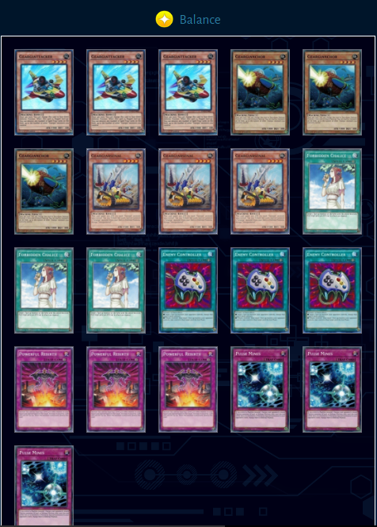

Geargias are a recent addition to the game which was added in the Valiant Souls main box. The deck revolves around monsters which can flip themselves face down and have very powerful non-targeting destruction effects when flipped face up. The box brought a complete monster core which can either be played as a control deck reminiscent to that of Gladiator Beasts or can be played with Ties of the Brethren to become one of the most powerful and consistent OTK decks Duel Links has seen to date.
Since all the monsters are Machine type, the deck has access to a wide range of tech options. The most relevant being Pulse Mines which is arguably the strongest defensive backrow card in the game. The decks strategy revolves around flipping your monsters face down and then flipping them face up. Geargiattacker destroys spell and trap cards while Geargianchor destroys monsters. Both of these cards do not target and instead you select cards to destroy at resolution. This means the opponent is forced to chain their backrow to our monster effects before we select targets. This also means we can destroy untargettable cards like Citadel Whale and Hazy Flame Sphynx.
Because the effect counts the number of other Geargia at resolution you will need to have ways to build a field and protect your monsters. Thankfully, we have numerous options to do that between Ties of the Brethren, Powerful Rebirth and the non-core Geargia monsters to a lesser extent. Like Gladiator Beasts, the decks engine is its monster core which is ran at between 6 and 9 depending what version you use. Therefore, the deck has a lot of versatility and tech spaces to adapt to future meta changes. Because of this and the fact that the monster core only requires two copies of a super rare Geargia are a safe investment going forward.
The version of the deck which uses Ties of the Brethren and cards such as Desert Sunlight is particularly powerful because there is very counter play available when the deck goes first. For example, the Geargia player can flip their monsters face down to avoid System Down and using Lava Golem without any form of protection gives them a 3000 attack monster while they still have a 1700 monster and a normal summon. Additionally, Ghostrick Scare and Desert Sunlight lets the deck play around Gravity Axe - Grarl and Floodgate Trap Hole.
Finally, decks such as Masked Heroes are beginning to use Fire Formation - Gyokkou but this deck can afford to use Pulse Mines in the draw phase since you will be using the Mines anyway. This makes the deck very impressive going first and a significant threat on the ladder and in tournament play which you will need to side for, though the best side deck card has yet to be determined.
